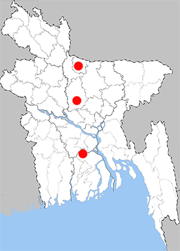

Abisara bifasciata
Double-banded Judy
Recorded Place:
Tangail, Barisal, Sherpur, Gazipur

Literature Records:
Chowdhury, S.H. & M. Hossain, 2025; PP: 362;. Butterflies of Bangladesh-A Pictorial Handbook (Revised and enlarged version II). Dhaka, Bangladesh, 260pp.
Neogi, A.K., Baki, M.A., Sadat, M.N., Selim, S.R. and Bhuiyan, N.A. 2014. Five New Records of Butterfly Species from Dhaka, Pirojpur and Cox`s Bazar Districts in Bangladesh. Journal of Entomology and Zoology Studies; 2: 197-200